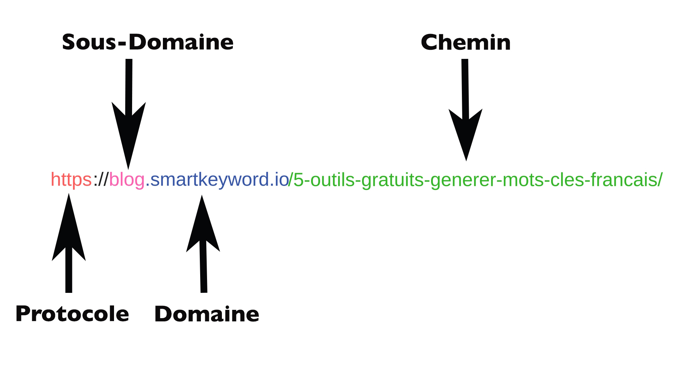

Les Urls
- Une URL, ou Uniform Resource Locator, est une chaîne de caractères utilisée pour identifier une ressource spécifique sur Internet, telle qu'une page web, une image, un fichier, etc. L'URL indique également comment accéder à cette ressource.
- Voici une analyse détaillée d'une URL typique :
-
Protocole (Scheme) : https
Le protocole est la méthode ou la convention utilisée pour accéder à la ressource. Dans cet exemple, le protocole est HTTPS, ce qui indique une connexion sécurisée. -
Sous-domaine : www
Le sous-domaine indique souvent une section spécifique d'un site web. Dans ce cas, "www" est un sous-domaine commun utilisé pour le World Wide Web. -
Domaine : example.com
Le domaine est l'adresse principale du site web. Il est souvent suivi d'un point "." et d'un suffixe comme ".com", ".net", ".org", etc. -
Port : 8080
La port est un numéro utilisé pour spécifier un point d'entrée sur le serveur. Dans ce cas, le serveur utilise le port 8080. -
Chemin (Path) : /path/to/resource
Le chemin indique le chemin vers la ressource spécifique sur le serveur. Il peut inclure des répertoires et des noms de fichiers. -
Paramètres de requête : ?param1=value1¶m2=value2
Les paramètres de requête contiennent des informations supplémentaires envoyées au serveur. Ils sont séparés de l'URL par le "?" et sont souvent au format "clé=valeur". Dans cet exemple, il y a deux paramètres de requête, "param1" avec la valeur "value1" et "param2" avec la valeur "value2". -
Fragment : #section
Le fragment identifie une partie spécifique de la ressource, comme une ancre dans une page web. Il est souvent utilisé pour naviguer vers un endroit précis dans une page.